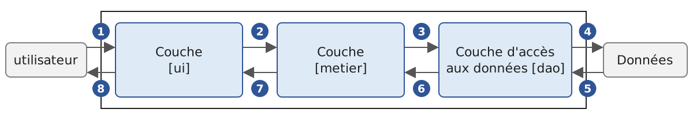
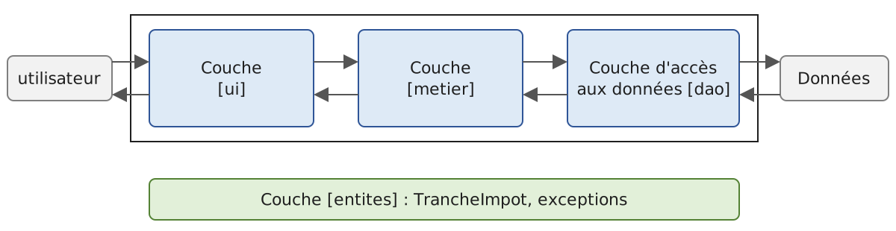
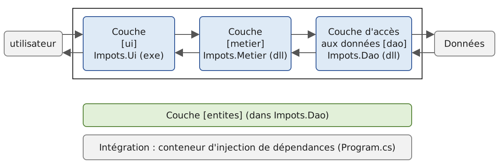
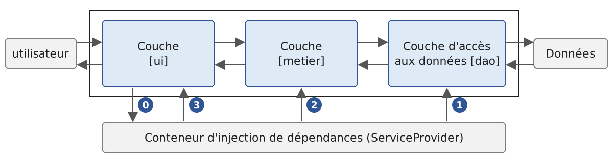

6. Layered Architectures
6.1. Introduction
Let’s revisit the latest version of the tax calculation application (version 3, previous chapter). Stripped down to the essentials, its console program had the following structure:
This program combines three processes found in most applications:
- retrieving data stored in files, databases, etc.: lines 1–14;
- user interaction: lines 19–20 (input) and 23 (output);
- the use of a business algorithm, specifically tax calculation: line 23. This calculation was previously performed by the class [AbstractImpot], the parent class of [FileImpot] and [JsonImpot]: in version 3, data reading and calculation are still combined within a single object.
Experience has shown that isolating these different processing steps into separate classes improves application maintainability. The architecture of an application structured in this way is as follows:

This architecture is called “three-tier architecture.” The term “tier” normally refers to a part of the application that runs on a different machine. When the parts are on the same machine, the term “layered architecture” is used instead:
- The [metier] layer contains the application’s business rules. For our application, these are the rules used to calculate a taxpayer’s tax. This layer requires data to function:
- tax brackets, which change every year;
- the number of children, the taxpayer’s marital status, and annual income;
- the data access layer, or [dao] (DAO = Data Access Object), provides data already stored in files or databases. This includes the tax brackets, as in version 3 of the application;
- the user interface layer, or [ui] (UI = User Interface), provides the data entered by the user and displays the results to the user. This applies here to the number of children, marital status, and the taxpayer’s annual income.
In general:
- the [dao] layer handles access to persistent data (files, databases) or non-persistent data (network, sensors, etc.);
- the [ui] layer handles interactions with the user, if there is one;
- the three layers are made independent of one another through the use of interfaces.
We will revisit the [Impots] application, which we have already examined several times, to give it a layered architecture. First, we need to define the interfaces for the application’s various layers.
6.2. The Interfaces of the [Impots] Application
Remember that an interface defines a set of method and property signatures. The classes that implement the interface provide the actual implementation for these methods and properties.
Let’s return to the layered architecture of our application:
In this type of architecture, the user often takes the initiative. The user makes a request in [1] and receives a response in [8]. This is called the request-response cycle. Let’s take the example of calculating a taxpayer’s tax. This will require several steps:
- The [ui] layer asks the user for their marital status, number of children, and annual salary. This is the [1] operation described above;
- once this is done, layer [ui] asks layer [metier] to calculate the tax. To do this, it sends the data it received from the user to that layer. This is operation [2];
- The [metier] layer needs certain information to complete its task: the tax brackets. It requests this information from layer [dao] via the path [3, 4, 5, 6]: [3] is the initial request, and [6] is the response to that request;
- With all the data it needed, layer [metier] calculates the tax;
- The [metier] layer can now respond to the request made by the [ui] layer in [2]. This is the [7] path;
- The [ui] layer formats this result and then presents it to the user. This is the path [8];
- One could imagine that the user might run tax simulations and want to save them. They would use the same path, [1-8], to do so.
As seen in this description, a layer uses the resources of the layer to its right, never those of the layer to its left. Consider two adjacent layers:

The layer [A] makes requests to the layer [B]. In the simplest cases, a layer is implemented by a single class. But an application evolves over time, and the layer [B] may successively have different implementation classes: [B1], [B2], and so on. If the [B] layer is the [dao] layer, it may have an initial implementation, [B1], that retrieves data from a file. A few years later, you might want to store this data in a database: you would then create a second implementation class, [B2]. If, in the initial application, the [A] layer worked directly with the [B1] class, we would be forced to partially rewrite the code for the [A] layer. For example, suppose we wrote something like the following in the [A] layer:
- Line 1: An instance of the [B1] class is created;
- line 3: data is requested from this instance.
If the new implementation class [B2] has methods with the same signature as the class [B1], you’ll need to change all instances of [B1] to [B2]. This is the best-case scenario, and it is quite unlikely if you have not paid attention to these signatures. In practice, it is common for the classes [B1] and [B2] to have different method signatures, meaning that a significant portion of the [A] layer must be rewritten.
We can improve this by placing an interface between the [A] and [B] layers. This freezes the method signatures that the [B] layer exposes to the [A] layer within an interface. The previous diagram becomes the following:

Layer [A] no longer communicates directly with layer [B] but instead with its interface [IB]. In the code for layer [A], the implementation class [Bi] of the [B] layer now appears only once, when the object that implements the [IB] interface is created. After that, the [IB] interface—and not its implementation class—is used. The previous code becomes:
- Line 1: An instance of
*[ib]that implements the*[IB]interface is created by instantiating the*[B1]* class; - Line 3: Data is requested from the [ib] instance.
Now, if we replace the [B1] implementation of the [B] layer with a [B2] implementation, and both of these implementations adhere to the same [IB] interface, only line 1 of the [A] layer needs to be modified. This is a major advantage that, on its own, justifies the systematic use of interfaces between two layers.
We can go even further and make the [A] layer completely independent of the [B] layer. In the code above, line 1 poses a problem because it hard-codes the class name [B1]. Ideally, the [A] layer should implement the [IB] interface without having to specify a class name. This would be consistent with the diagram above: the [A] layer interfaces with the [IB] interface, and there is no reason why it would need to know the name of the class that implements that interface.
This is what dependency injection (DI) enables. The previous architecture evolves as follows:

A cross-cutting component—the dependency injection container—creates the objects that implement the layers and connects them to one another: it passes the [A] layer a reference to the object that implements the [B] layer. The code for the [A] layer then takes the following form:
- Line 2: The [A] layer receives, via its constructor, a [ib] instance that implements the [IB] interface. It is not the [A] layer that creates it, but the container;
- Line 7: Data is requested from the [ib] instance.
The implementation class [B1] no longer appears anywhere in the code of the [A] layer. When the implementation [B1] is replaced by a new implementation [B2], nothing will change in the code of the [A] layer: the only thing that will change is the single location in the application where the container is told which class implements [IB]. This location can even read the name of the implementation to use from a configuration file.
The 2008 course used the Spring.NET framework and a configuration file named XML [App.config] for this purpose. Spring.NET is no longer maintained; NET now provides its own container, [Microsoft.Extensions.DependencyInjection], which is used by all ASP.NET Core applications. This is the one we will use in version 5 of the application. The combination of “C# interfaces + dependency injection” brings a decisive improvement to application maintenance by making the layers independent of one another.
Let’s return to the layered architecture of our application. In simple cases, we can start with the [metier] layer to explore the application’s interfaces. To function, the application needs data:
- already available in files, databases, or via the network. This data is provided by the [dao] layer;
- not yet available. In that case, they are provided by the [ui] layer, which obtains them from the user.
What interface must the [dao] layer provide to the [metier] layer? The [dao] layer must provide the tax brackets to the [metier] layer. In our application, the [dao] layer uses existing data but does not create new data. Its interface can be as follows:
- Line 3: The [dao] layer is placed in the [Dao] namespace. We use file-scope namespaces (C# 10): the declaration [namespace Dao;] applies to the entire file, without curly braces or additional indentation;
- Line 9: The [IImpotDao] interface defines the read-only property [TranchesImpot], which provides the tax brackets to the [metier] layer;
- line 1: imports the namespace in which the type [TrancheImpot] is defined:
As in versions 2 and 3, a tax bracket is represented by a [readonly record struct] (C# 10): a read-only structure for which the compiler generates the constructor (from the parameters placed after the type name), the read-only properties [Limite], [CoeffR], and [CoeffN] (read-only), value equality, and the [ToString] method. We write [new TrancheImpot(4962M, 0M, 0M)] to create a slice. The 2008 course used a structure with modifiable properties; we will see that the inability to modify a slice eliminates a side effect of the old layer [metier].
What interface should the [metier] layer present to the [ui] layer? Let’s review the interactions between these two layers:
- The [ui] layer asks the user for their marital status, number of children, and annual salary. This is operation [1] in the schema;
- Once this is done, the [ui] layer asks the [metier] layer to calculate the tax. To do this, it sends the data it received from the user to the [metier] layer. This is operation [2].
The interface for layer [metier] might look like this:
- Line 1: Everything related to the [metier] layer is placed in the [Metier] namespace;
- line 6: the [IImpotMetier] interface defines only one method, which calculates a taxpayer’s tax based on their marital status, number of children, and annual salary.
We will now examine an initial implementation of this layered architecture.
6.3. Sample Application—Version 4
6.3.1. The Project
Version 4 is a single console project, created by:
Each layer occupies a separate folder:
- The [Entites] folder contains the cross-layer types [ui], [metier], and [dao]: the structure [TrancheImpot] and the exception [ImpotException], carried over from version 3;
- the [Dao] folder contains the interface and classes for the [dao] layer. We will use two implementations of the [IImpotDao] interface: the [HardwiredImpot] class, whose data is hard-coded (version 2), and the [FileImpot] class, which reads data from a text file (version 3). Reading a JSON file—the other option in version 3—will be covered in version 5;
- The [Metier] folder contains the interface and class for the [metier] layer;
- The [Ui] folder contains the class for the [ui] layer;
- The file [Program.cs] creates the layers and links them together;
- the file [DataImpot.txt] contains the tax brackets read by the [FileImpot] implementation of the [dao] layer.
The folder names are irrelevant to the compiler: all [.cs] files in the project folder and its subfolders are compiled. This is a convention that makes the project easier to read; it is supplemented by naming the namespace after the folder.
The file [ImpotsV4.csproj] is the one generated by [dotnet new], supplemented with an instruction to copy the data files:
- Line 12: The [DataImpot*.txt] files are copied next to the executable during compilation, into the [bin/Debug/net10.0] folder. The [dao] layer looks for them in this location, regardless of whether the program is launched via [dotnet run] from the project folder or directly from another folder.
6.3.2. The application’s entities

We refer to entities as types that span multiple layers. These are generally the classes and structures that encapsulate the data from the [dao] layer. These entities generally trace back to the [ui] layer. The application entities are the structure [TrancheImpot], which has already been presented, and the exception [ImpotException] from version 3, along with the list of its error codes:
- lines 4–5: the error codes. The attribute [Flags] indicates that the values in the enumeration are bits that can be combined using the operator [|]: the value [CodeErreur.Champ2 | CodeErreur.Champ3] (8 + 16 = 24) means that fields 2 and 3 of a line are incorrect. The [ToString] method for such an enumeration then displays “Field2, Field3.” The value [Json] from version 3 has been removed, since this version does not read the JSON file;
- line 8: an application-specific exception derived from the [Exception] class;
- line 11: the error code, an integer that combines [CodeErreur] values, is a [init] property (C# 9): it can only be assigned a value when the object is created, for example with an initializer [new ImpotException(...) { Code = ... }];
- Lines 14–15: two constructors, one with a message, the other with a message and the original exception, which will be accessible via the property [InnerException]. They simply call the corresponding constructor of the parent class [Exception] ([: base(...)]).
In this version, only the [FileImpot] class in the [dao] layer instantiates [ImpotException].
6.3.3. The [dao] layer
Let’s review the interface of the [dao] layer:
We implement this interface in two different ways. First, with the [HardwiredImpot] class:
- line 6: the [HardwiredImpot] class implements the [IImpotDao] interface;
- line 9: implementation of the [TranchesImpot] property of the interface. This is an automatic, read-only property, initialized by a property initializer (C# 6);
- Lines 11–17: The initial value is a collection expression (C# 12): the list of elements enclosed in square brackets creates an array named [TrancheImpot[]]. Each element is created by
***[new(...)]**: the type of the created object is not repeated; it is inferred from the expected type,*[TrancheImpot](C# 9).
The [IImpotDao] interface is also implemented by the [FileImpot] class, which reads tax brackets from a text file. The [DataImpot.txt] file is as follows:
Each line describes a tax bracket in the format [limite:coeffR:coeffN]. Numbers are written with a decimal point, regardless of the system language; this ensures the file is readable on all machines. The values are those from the 2004 tax schedule for 2003 income, retained as-is: this is an exercise. The class [FileImpot] is as follows:
- Line 3: The [using static] directive (C# 6) allows you to use static members and nested types of a type without a prefix. The values of an enumeration are constants, and therefore static members: we write [Champ1] instead of [CodeErreur.Champ1];
- line 9: the class [FileImpot] implements the interface [IImpotDao];
- line 15: the property of the [IImpotDao] interface. It does not have a [set]: it can only be assigned a value in the constructor (line 75);
- line 18: the constructor takes the name of the tax bracket file;
- line 23: the tax brackets read are accumulated in a list, initialized by an empty collection expression;
- line 25: the file is searched for in the executable’s folder, [AppContext.BaseDirectory], where the file [.csproj] copied it. If [fileName] is an absolute path, [Path.Combine] leaves it as is;
- lines 29–31: if the file does not exist, a [FileNotFoundException] is triggered with a message in French. The exception message that .NET would otherwise throw is in English (.NET does not have messages in French) and contains the full path to the file;
- Line 33: [File.ReadLines] reads the file line by line: the lines are read as the [foreach] loop progresses, and the file is closed at the end of the loop, even if an exception is thrown;
- line 43: the line is split at the colon; the [StringSplitOptions.TrimEntries] option removes the spaces around each field;
- Lines 46–48: A line that does not have three fields is invalid;
- lines 53–55: conversion of the three fields. Each incorrect field adds a bit to the error code using the [|=] operator;
- lines 58–60: an incorrect line triggers a [ImpotException], whose message provides the line number and content. The code, of type [CodeErreur], is converted to an integer by [(int)code];
- line 63: the read segment is added to the list;
- line 66: the exception filter [when] (C# 6) intercepts only I/O errors: [IOException], from which [FileNotFoundException] is derived, and [UnauthorizedAccessException] (insufficient permissions). The [e is IOException or UnauthorizedAccessException] pattern (C# 9) checks for both types. The [ImpotException] thrown on line 60 is not caught: it is propagated as-is to the caller;
- lines 69–71: the I/O error is wrapped in a [ImpotException] with code [Acces]; the original exception is retained in its [InnerException] property;
- line 75: the list is copied into an array. The [..] operator (“spread”) of a collection expression inserts all elements of another collection;
- Lines 79–80: Conversion of a field to [decimal]. The [NumberStyles.AllowDecimalPoint] style accepts only digits and a decimal point, and the invariant culture [CultureInfo.InvariantCulture] requires a period as the decimal separator. Thus, “0.191” is rejected, even though the user’s fr-FR culture would have accepted it. The method is written with a [=>] expression body (C# 6).
6.3.4. The [metier] layer
Let’s review the interface for this layer:
Its implementation, [ImpotMetier], is as follows:
- Line 7: The class [ImpotMetier] implements the interface [IImpotMetier]. The [metier] layer must collaborate with the [dao] layer: it therefore receives a reference to the object that implements the [IImpotDao] interface. This reference is the parameter [dao] of the class’s primary constructor (C# 12): parameters listed after the class name are those of its constructor, and they can be used throughout the class body;
- Line 10: When the object is constructed, the [metier] layer requests the tax brackets from the [dao] layer once and for all and stores them in a read-only field. Note that the [metier] layer knows the [dao] layer only through its [IImpotDao] interface: it does not know whether the tax brackets come from the code, a file, or, later, a database;
- Lines 16–17: The [metier] layer does not trust its callers. The static methods [ThrowIfNegative] (.NET 8) throw a [ArgumentOutOfRangeException] if their parameter is negative; the exception message contains the parameter’s name;
- lines 19–22: the number of shares. The division [nbEnfants / 2M] is a decimal division because [2M] is a [decimal]: 3 children equal 1.5 shares;
- lines 25–26: taxable income and the family quotient;
- lines 29–35: we look for the first bracket whose threshold is greater than or equal to the family quotient. The last bracket, [tranches[^1]] (the index [^1] refers to the last element, C# 8), is used if no other bracket fits: its threshold (0) is not used;
- line 39: the tax, truncated to its integer part.
The 2008 course code wrote [tranchesImpot[tranchesImpot.Length - 1].Limite = QF + 1] before searching for the bracket, so that the search loop would always terminate. This instruction modified the array provided by the [dao] layer: a side effect on data shared by all layers. In fact, it could no longer be written this way, since a [TrancheImpot] is now read-only. The modern code simply takes the last segment when no limit is suitable, without modifying the data it receives.
6.3.5. The [ui] layer
In versions 2 and 3, the user interface was written in the main program, following the creation of the calculation object. The only difference was in how this object was created. We now isolate this interaction in a class within the [ui] layer, which knows the [metier] layer only through its interface:
- line 6: the [Dialogue] class is static: it has no state of its own and contains only static members;
- lines 9–14: The help message is a raw string literal (C# 11), delimited by three quotation marks. It can span multiple lines; the common indentation of the lines, determined by the position of the closing quotation marks, is removed;
- line 17: the [Run] method receives the [metier] layer in the form of its [IImpotMetier] interface. It knows nothing about the class that implements it or the [dao] layer;
- Line 23: [Console.ReadLine] produces [null] at the end of the input stream; the operator [?.] then produces [null] without calling [Trim], and the operator [??] replaces [null] with the empty string: an end-of-stream terminates the dialog just like an empty line;
- line 30: the entered line is split by spaces; the [StringSplitOptions.RemoveEmptyEntries] option ignores multiple spaces;
- lines 44–50: [int.TryParse(champs[1], out int nbEnfants)] declares the output variable within the call itself (C# 7);
- line 56: the parameters are correct: the calculation is requested from the [metier] layer.
6.3.6. Integrating the Layers
All that remains is to create the layers and link them together. This is the role of the main program [Program.cs]:
- line 8: the program argument selects the implementation of layer [dao]: [hardwired] for class [HardwiredImpot]; otherwise, the name of the file read by class [FileImpot], with [DataImpot.txt] as the default. Note that with high-level instructions, the command-line arguments are stored in the array [args];
- line 13: creation of the layer [dao]. This is the only place in the program where the classes [HardwiredImpot] and [FileImpot] are named;
- line 15: creation of layer [metier], which receives layer [dao];
- Lines 17–22: The creation of layer [dao] may trigger a [ImpotException]. The error is then displayed, along with the message from the original exception (if any), and the program terminates with exit code 1. As in version 3, the code is converted to [CodeErreur] to be displayed in plain text;
- Line 26: The layers are ready: the [ui] layer interacts with the user.
6.3.7. Executions
Using the file [DataImpot.txt] (implementation [FileImpot]), and testing input validation:
With the implementation [HardwiredImpot]:
With a file that does not exist:
The error code is [Acces], and the message from the original exception, [FileNotFoundException], is displayed.
With the following file, [DataImpotInvalide.txt], where line 3 contains decimal commas:
the result is:
Fields 2 and 3 of line 3 are incorrect: the error code combines the bits from [Champ2] and [Champ3], and the [ToString] method of an enumeration [Flags] displays it as “Field2, Field3 .”
6.3.8. Conclusion
The layered architecture and the use of interfaces have brought a certain flexibility to our application. This is evident in the way the main program creates the layers [dao] and [metier]:
Changing the implementation of layer [dao] changes only line 1. Once the layers have been created, the code for the [ui] layer is the same in both cases: the [metier] layer is accessed through its [IImpotMetier] interface, not through its implementation class.
The same flexibility is evident in the [metier] layer: it is built based on a reference to the interface of the [dao] layer. Changing the implementation of the latter therefore has no impact on the [metier] layer. This is why our single [ImpotMetier] class was able to work without modification with two different implementations of the [dao] layer.
6.4. Sample Application - Version 5

This new version is based on the previous one with the following changes:
- The layers [dao] and [metier] are each placed in a class library (DLL) and tested using the unit testing framework MSTest;
- The [dao] layer receives a third implementation, [JsonImpot], which reads the tax brackets from a file named JSON;
- the integration of the layers is handled by the dependency injection container in .NET, and the implementation of the [dao] layer is selected from a configuration file.
In large projects, multiple developers work on the same application. Layered architectures facilitate this way of working: because layers communicate with each other through well-defined interfaces, a developer working on one layer does not have to worry about the work of other developers on other layers. All that is required is that everyone adheres to the interfaces.
Thus, to test the [metier] layer, the developer needs an implementation of the [dao] layer. Until that implementation is complete, the developer can use a dummy implementation of the [dao] layer, provided it adheres to the [IImpotDao] interface. This is another advantage of the layered architecture: a delay in the [dao] layer does not prevent the [metier] layer from being tested. The mock implementation also has the advantage of being much simpler to set up than the actual [dao] layer, which may require a SGBD, network connections, etc.
Once the [dao] layer is complete and tested, it is provided to the developers of the [metier] layer in the form of a library (a project or a DLL) rather than source code to be copied. Ultimately, the application is delivered as an executable (that of the [ui] layer) and class libraries (the other layers).
6.4.1. The ImpotsV5 Solution
Version 5 is a solution consisting of four projects: one per layer, plus a unit test project. It is built using the following commands, entered in the [ImpotsV5] folder:
- [dotnet new classlib] creates a class library project: compiling it produces a DLL file, not an executable. The template creates a [Class1.cs] file, which we delete;
- [dotnet new mstest] creates a test project, MSTest, which is described later;
- [dotnet new sln --format slnx] creates the solution file [ImpotsV5.slnx], in the XML format introduced by SDK in .NET 9; This is the default format of [dotnet new sln] since .NET 10; the [--format slnx] option therefore merely makes it explicit; [dotnet sln add] adds the projects to it;
- [dotnet add reference] adds a project-to-project reference: the [metier] layer uses the [dao] layer, the [ui] layer uses the other two, as do the tests.
This results in the following tree structure:
The solution file is as follows:
The command [dotnet build ImpotsV5.slnx] compiles the four projects in the order specified by their references: [Impots.Dao] first, then [Impots.Metier], then [Impots.Ui], and finally [Impots.Tests].
6.4.2. The [dao] layer
The [Impots.Dao] project contains the [dao] layer and the application entities. Its project file is as follows:
- lines 4–6: the properties generated by [dotnet new classlib]. There is no [OutputType] tag: the project produces a [Impots.Dao.dll] library;
- Lines 12–13: The data files are copied to the build folder. Files marked in this way are also copied to the build folder of any project that references [Impots.Dao]: the projects [Impots.Ui] and [Impots.Tests] will have the data files without having to declare them.
Entities
The structure [TrancheImpot] and the class [ImpotException] are those of version 4. Only the enumeration [CodeErreur] is removed from the file: [ImpotException] thus becomes common to all implementations of the [dao] layer, without being tied to the codes of any one of them:
- Line 7: The error code remains a simple integer: each implementation of the [dao] layer defines its own codes.
The [FileImpot] implementation
The [IImpotDao] interface and the [HardwiredImpot] class are those of version 4. The [FileImpot] class differs only in the location of its error codes:
- lines 11–12: The error codes, previously in the [CodeErreur] enumeration within the [Entites] namespace, have been moved to the [FileImpot] class, in the form of a nested enumeration [CodeErreurs]: these are, in fact, codes specific to this implementation of the [IImpotDao] interface ([JsonImpot] has its own). They are written as [CodeErreurs.Champ1] within the class and [FileImpot.CodeErreurs.Champ1] outside of it. The [using static] directive from version 4 is no longer needed.
Further down in the constructor:
- lines 63, 72: errors are encapsulated in a [ImpotException]. The error code, of type [CodeErreurs], is converted to an integer by [(int)code].
The [JsonImpot] Implementation
The previous chapter showed how to read data in the JSON format using [System.Text.Json]. The third implementation of the [dao] layer reads the tax brackets from the following [DataImpot.json] file:
The [JsonImpot] class is as follows:
- Line 11: Error codes for this implementation: file access error or incorrect content;
- Lines 27–31: The file is read in its entirety into a string, with the same I/O error handling as in [FileImpot];
- line 43: the string JSON is converted into an array [TrancheImpot[]]. The second parameter, [TranchesJsonContext.Default.TrancheImpotArray], provides the deserialization code for this type;
- Line 44: [Deserialize] returns [null] if the file contains the literal JSON [null]; the expression [?? throw] (C# 7) then throws an exception;
- lines 46–50: a file that is not an array of slices JSON causes a [JsonException], wrapped in a [ImpotException] of code [Format];
- lines 58–60: without a parameter of this type, [JsonSerializer] discovers the properties of [TrancheImpot] at runtime, through reflection. Here, the [JsonSerializable] attribute instructs the compiler to generate, within the partial class [TranchesJsonContext], the (de)serialization code for the type [TrancheImpot[]]. This code is faster and also works in applications compiled to native code (AOT), where reflection is disabled—which is the default behavior for the single-file applications of .NET 10 that we will be using. The [JsonSerializerDefaults.Web] option maps the names JSON and camelCase ([limite]) to C# properties ([Limite]). Note that [System.Text.Json] can construct a positional [record struct] by calling its constructor.
A Test Program
Before writing automated tests, let’s perform an initial visual test of the [dao] layer. .NET 10 allows a single-file application to reference a project using the [#:project] directive. The [Essais/essai-dao.cs] program displays the slices provided by the three implementations:
- Line 1: The program uses the [Impots.Dao] project. This project is compiled along with the program, and its data files are copied next to the test program’s executable. Note: If you subsequently modify the referenced project without modifying the program, [dotnet run essai-dao.cs] may reuse the executable that has already been built; the option [--no-cache] then forces a new compilation;
- line 8: an array of the three implementations of the [IImpotDao] interface;
- line 11: [GetType] returns the actual type of the object, whose class name is [Name];
- lines 18–22: handling a potential [ImpotException].
Results:
All three implementations return the same ranges. The display of the numbers [decimal] follows the user’s fr-FR locale: decimal point.
6.4.3. The [metier] layer
The project file [Impots.Metier.csproj] is as follows:
- Line 11: the reference to the [Impots.Dao] project added by [dotnet add reference]. The 2008 course had the compiled DLL reference the layer [dao], which had to be retrieved from a folder named [bin]; a project-to-project reference compiles [Impots.Dao] before [Impots.Metier] and always uses its latest version.
The [IImpotMetier] interface and the [ImpotMetier] class are from version 4. The test program [Essais/essai-metier.cs] performs some tax calculations:
- Line 1: The program references the project [Impots.Metier]; since this project references [Impots.Dao], the program also has access to the layer [dao] and its features;
- Line 9: Creation of the [dao] and [metier] layers. The [dao] layer is implemented by the [FileImpot] class;
- Lines 10–13: Repeated calls to the single method of the [IImpotMetier] interface.
Results:
A married couple with 2 children and a single person with 3 children have the same number of shares (3): their taxes are equal.
6.4.4. Unit tests with MSTest
6.4.4.1. The Principle
The tests performed so far relied on visual verification: we checked that the screen displayed the expected results. This method is impractical when there are many tests to run: humans are prone to fatigue, and their ability to verify results diminishes as the day goes on. The tests must therefore be automated and require no human intervention.
An application evolves over time. With each update, we must verify that it does not “regress”—that is, that it continues to pass the functionality tests performed during its initial development. These tests are called non-regression tests. A moderately large application may require hundreds of tests: in fact, every method in every class of the application is tested. These are called unit tests.
Frameworks have been developed to automate these tests. The 2008 course used NUnit 2.4 and its graphical user interface. Here we use MSTest, Microsoft’s testing framework, in version 4 (NUnit and xUnit are two other widely used frameworks that operate on the same principle). Tests are run using the [dotnet test] command from the command line: this allows them to be launched automatically, for example, whenever code changes are deployed to a continuous integration server. The integrators (Visual Studio, VS Code, Rider) also feature a test explorer that displays tests in a tree structure.
6.4.4.2. A First Example
Let’s examine the principle of MSTest tests using an example. We create a test project using the command:
The template creates a project file, which we modify to use version 4.0.2 of MSTest:
- Line 11: The project uses the NuGet [MSTest] package. This package includes the framework (the attributes and the [Assert] class), the adapter that allows [dotnet test] to find and run the tests, and code analyzers that issue warnings for poorly written tests;
- Line 15: a global [using]: the [Microsoft.VisualStudio.TestTools.UnitTesting] namespace from MSTest is imported into all files in the project.
The template also creates a [MSTestSettings.cs] file, which specifies that the tests should run in parallel. We replace it with the following so that the tests run one after the other and their results appear in a consistent order:
- Line 2: an attribute that applies to the entire assembly (DLL) and not to a specific class.
The test class [Tests1] is as follows:
- Line 4: The attribute [TestClass] indicates that the class contains tests. It must be public;
- line 8: the method being tested. In a real project, it would be in another project, referenced by the test project;
- Lines 11–13: the constructor. It is used only to display a message on the screen: we want to see when it is executed;
- line 17: the attribute [TestInitialize] designates a method executed before each test;
- line 24: the attribute [TestCleanup] designates a method executed after each test;
- line 31: the attribute [TestMethod] designates a test method. A test method is public, returns nothing (or a [Task] if it is asynchronous), and, with one exception we’ll discuss, has no parameters;
- line 35: The method [Assert.AreEqual(attendu, obtenu)] verifies that the obtained value equals the expected value. If this is not the case, it throws an exception and the test fails. Here, the assertion must pass;
- line 43: this assertion must fail. The third parameter is the message displayed in the event of a failure.
The tests are run using the [dotnet test] command in the project folder. The [--logger "console;verbosity=detailed"] option displays the details of each test, including its on-screen output:
- line 8: the [T1] test passed;
- lines 10–13: its screen outputs: the constructor was executed, followed by the [Avant] method, the test, and finally the [Apres] method;
- line 16: the [T2] test failed;
- line 18: the error message: the expected value, the actual value, the expressions that produced them, and the message passed to [Assert.AreEqual]. MSTest provides error messages in French;
- line 19: MSTest also displays the call stack at the time of the failure, which leads to the faulty line. We have removed it from the screenshot;
- Lines 22–25: The output from the [T2] test. Note that the constructor was executed again: MSTest creates a new instance of the test class for each test. The tests are thus independent of one another: one test cannot be affected by the state left by another test. NUnit, on the other hand, executed the constructor only once;
- lines 28–34: the tests for the [Tests2] class, shown below;
- lines 36–39: the results: 8 tests passed and 1 failed. The [dotnet test] command then terminates with a non-zero exit code, which allows a script to detect the failure.
To run only a subset of the tests, use the [--filter] option: [dotnet test --filter Name=T1] runs only the [T1] test, while [dotnet test --filter ClassName=TestsDemo.Tests2] runs the tests in the [Tests2] class.
6.4.4.3. Other assertions
The [Assert] class has many methods. The [Tests2] class includes a few of them:
- lines 12–13: check whether a Boolean expression is true or false;
- lines 16–17: check whether a reference is non-null or null;
- lines 18–19: check whether two references point to the same object;
- lines 27–28: calculations on real numbers [double] are approximate: [0.1 + 0.2] is not exactly equal to [0.3]. We therefore compare two real numbers to within a certain margin of error, in this case one millionth;
- lines 36–40: assertions on strings and collections, added by recent versions of MSTest. They produce more precise error messages than [Assert.IsTrue(message.StartsWith("Ligne"))];
- lines 48–49: [Assert.ThrowsExactly<T>(action)] executes the action—an anonymous function [() => ...]—and verifies that it throws an exception of exactly type [T]. It returns the thrown exception, which allows its properties to be verified afterward. The variant [Assert.Throws<T>] also accepts exceptions of types derived from [T];
- lines 55–58: a parameterized test. The test method has parameters, and each [DataRow] attribute provides a set of values for these parameters. The test is executed once per [DataRow] attribute: this is what lines [T7 (1,1,2)], [T7 (2,3,5)], and [T7 (-1,1,0)] of the previous results showed.
Let’s summarize the main methods of the [Assert] class:
Method | Checks that |
Assert.AreEqual(expected, actual) | the two values are equal (Equals method) |
Assert.AreEqual(actual1, actual2, delta) | the two actual values are equal to within delta |
Assert.AreNotEqual(v1, v2) | The two values are different |
Assert.AreSame(o1, o2), Assert.AreNotSame(o1, o2) | The two references may or may not refer to the same object |
Assert.IsNull(o), Assert.IsNotNull(o) | the reference is null (or not) |
Assert.IsTrue(b), Assert.IsFalse(b) | the Boolean expression is true (or false) |
Assert.IsInstanceOfType<T>(o) | the object is of type T or a derived type |
Assert.HasCount(n, collection) | the collection has n elements |
Assert.Contains(element, collection) | the collection (or string) contains the element |
Assert.StartsWith(start, string) | the string begins with start |
Assert.ThrowsExactly<T>(action) | The action throws an exception of type T exactly |
CollectionAssert.AreEqual(c1, c2) | The two collections have the same elements, in the same order |
All of these methods accept an optional final parameter: the message displayed in case of failure.
6.4.4.4. Tests for the [dao] layer
Let’s return to the [Impots] application. The [Impots.Tests] project was created by [dotnet new mstest]. Its project file is as follows:
- Lines 17–18: the layers being tested;
- line 27: an incorrect data file, used to test for errors. The files [DataImpot.txt] and [DataImpot.json] are copied using the reference to the [Impots.Dao] project.
The file [MSTestSettings.cs] belongs to project [TestsDemo]. The class [DaoTests] tests the layer [dao]:
- lines 11–16: a method that creates a [dao] layer based on its class name, using a [switch] expression (C# 8);
- lines 21–24: the same test is run for all three implementations. It verifies that there are 7 slices and checks the value of slice #2 (the third one). The expected values are written with the suffix [M]: these are [decimal], just like the properties being compared;
- lines 36–40: All three implementations return exactly the same slices. [CollectionAssert.AreEqual] compares the arrays element by element; the comparison of two [TrancheImpot] values is a value comparison, generated by the compiler for a [record struct];
- lines 45–49: a missing file triggers a [ImpotException] with code [Acces], which encapsulates a [FileNotFoundException];
- lines 54–58: the file [DataImpotInvalide.txt] results in a [ImpotException] whose code combines the bits of [Champ2] and [Champ3];
- lines 63–66: the same verification for the [JsonImpot] implementation.
6.4.4.5. Tests for the [metier] layer
The [MetierTests] class tests the [metier] layer:
- Lines 12–17: The [metier] layer being tested is built on the [dao] and [HardwiredImpot] layers, which do not depend on any files. Since MSTest creates a new instance of the class for each test, each test has brand-new layers;
- lines 22–28: calculations whose results are known. These are the application’s control values, already obtained by previous versions: they must remain accurate in all future versions;
- lines 35–39: the tax calculation does not modify the tax brackets provided by the [dao] layer. A copy ([.. dao.TranchesImpot]) is made before a calculation that uses the latest bracket, and then the results are compared. The test keeps track of the defect in the 2008 version: if someone were to reintroduce it, this test would flag it;
- lines 44–47: negative parameters are rejected;
- lines 51–53: a dummy layer [dao], like the one the developer of layer [metier] would use before the real layer [dao] is ready: a single tax bracket, a tax rate of 10% of taxable income. This is a class nested within the test class;
- lines 58–62: the [metier] layer works with the dummy [dao] layer. The [metier] layer is thus tested on its own, independently of the actual implementations of the [dao] layer.
6.4.4.6. Test Execution
In the [Impots.Tests] folder:
All 16 tests passed: each attribute [DataRow] counts as one test. We now consider the layers [dao] and [metier] to be operational. Unlike in 2008, there is no need to rebuild the DLL layers to exclude the test classes: the tests are in a separate project, and the libraries [Impots.Dao.dll] and [Impots.Metier.dll] contain only the layer code. The command [dotnet test ImpotsV5.slnx], located in the solution folder, runs the tests for all test projects in the solution.
6.4.5. The [ui] layer
The project file [Impots.Ui.csproj] is as follows:
- Line 4: The project generates an executable;
- Lines 12–13: The [ui] layer uses the [metier] and [dao] layers;
- Lines 18–19: two NuGet packages—the dependency injection container and the JSON configuration file reader. They were added by the commands [dotnet add package Microsoft.Extensions.DependencyInjection --version 10.0.12] and [dotnet add package Microsoft.Extensions.Configuration.Json --version 10.0.12];
- Line 24: The configuration files are copied next to the executable.
The [Dialogue] class is the one from version 4, supplemented with a method that throws an exception and all the exceptions it encapsulates:
- line 63: a string of 40 dashes, created by the [string(char c, int count)] constructor;
- line 65: the loop iterates through the chain of exceptions: each exception provides access, via its property [InnerException], to the exception it encapsulates, up to the last one where [InnerException] equals [null]. The type [Exception?] indicates that the variable [e] can be equal to [null];
- Line 67: For each exception, the full name of its class (including the namespace) and its message are displayed.
The class [Dialogue] is public: Subsequent versions of the application, which will switch to layer [dao], will reuse layer [ui] by referencing project [Impots.Ui] and calling [Dialogue.Run(metier)].
6.4.6. Integrating Layers via Dependency Injection
In version 4, the main program created the layers [dao] and [metier] by naming their implementation classes:
Apart from these lines, nothing in the application changes when a layer’s implementation changes, since each layer communicates with the next through an interface. We can take layer independence a step further by entrusting their creation to a dependency injection container and placing the choice of the [dao] layer’s implementation in a configuration file. Changing the implementation of this layer then simply involves modifying that file, without recompiling the application.

In the example above, the [ui] layer requests [0] from the dependency injection container via the [metier] layer. To create it, the container first creates the layer [dao] [1], then the layer [metier] [2], to which it passes the layer [dao]. Finally, it returns a reference to the layer [metier] [3] to the layer [ui].
6.4.6.1. The configuration file
The choice of the [dao] layer implementation is specified in the [appsettings.json] file:
- Line 2: A [Dao] section contains the configuration for the [dao] layer;
- Line 3: The class that implements the [dao] layer: [HardwiredImpot], [FileImpot], or [JsonImpot];
- Line 4: the data file, for implementations that read one.
[appsettings.json] is the standard name for the configuration file of .NET applications, particularly ASP.NET Core applications. It replaces the XML and [App.config] files from the .NET Framework, which were used by Spring.NET during the 2008 academic year. The project contains three other configuration files, which the program uses if their names are passed as arguments:
6.4.6.2. The main program
The main program [Program.cs] from the [Impots.Ui] project is as follows:
- line 9: the name of the configuration file: [appsettings.json] by default, or the one passed as an argument;
- lines 16–19: reading the configuration. [ConfigurationBuilder] assembles a configuration from sources: in this case, a single file JSON ([AddJsonFile]), located in the executable’s folder ([SetBasePath]). The parameter [optional: false] (a named parameter, C# 4) makes the file mandatory: its absence causes a [FileNotFoundException];
- lines 20–21: the configuration is read as a dictionary. The key [Dao:Implementation] refers to the property [Implementation] of the section [Dao]; the level separator is the colon. The indexer returns [null] if the key does not exist: the operator [??] then provides a default value;
- line 24: the service collection, that is, the list of types that the container can create and how to create them;
- lines 26–31: the [dao] layer record. [AddSingleton<IImpotDao>(fabrique)] indicates that when a [IImpotDao] is requested, the container will call the [fabrique] function to create it. "Singleton" means that the object will be created only once, upon the first request, and that all subsequent requests will return the same object: there is only one [dao] layer in the application. The factory selects the class based on the configuration, using the expression [switch]; its parameter, the container itself, is not used here, hence the name [_] (“discard”). An unknown implementation results in a [ImpotException];
- line 34: the [metier] layer record: when a [IImpotMetier] is requested, the container will create a [ImpotMetier] object. To do this, it examines the constructor of the [ImpotMetier] class, sees that it expects a [IImpotDao], and passes it the [dao] layer registered above: this is dependency injection. The [dao] layer is a dependency of the [metier] layer;
- line 37: creation of the container from the collection of services;
- line 38: the container is asked for the [metier] layer. The container creates the [dao] layer, then the [metier] layer. [GetRequiredService] throws an exception if the requested type has not been registered. Note that the layer [ui] obtains the layer [metier] without specifying the class that implements it;
- lines 40–44: any configuration or layer creation errors are displayed along with the exception stack trace, and the program terminates;
- line 48: the user interface, identical to that of version 4.
The 2008 course included the full names of the classes to be instantiated ([Dao.FileImpot, ImpotsV5-dao]) in the configuration file: Spring.NET created them using reflection. We chose instead to define the possible implementations in the factory: the configuration file simply selects from among them, and the compiler verifies that the classes exist and have the required constructors. In both cases, the code for layers [ui] and [metier] never specifies the class that implements layer [dao].
6.4.6.3. Exécutions
With the file [appsettings.json] (implementation [FileImpot]):
With the implementation [JsonImpot]:
With the implementation [HardwiredImpot]:
We switched to the [dao] implementation without changing a single line of code or recompiling the application.
With the file [appsettings-erreur.json], which refers to a nonexistent data file:
- line 6: the original exception, of type [FileNotFoundException], thrown by the class [FileImpot];
- line 4: the [dao] layer encapsulated it in a [ImpotException]. It is this exception that was propagated up to the main program via the [GetRequiredService] call.
The .NET container passes through exceptions thrown during object creation without modification. With Spring.NET, the same error produced a chain of eight exceptions, six of which were caused by the framework ([ConfigurationErrorsException], [ObjectCreationException], [TargetInvocationException], etc.), followed by the two exceptions mentioned above. The key takeaway from this chain is that it is often the deepest exception—the last one displayed—that is the most significant.
Dependency injection alone deserves a chapter of its own. We used only the essentials: registering services ([AddSingleton]), building the container ([BuildServiceProvider]), and obtaining a service ([GetRequiredService]). The container can also create a new object for each request ([AddTransient]) or an object per “scope,” such as per request (HTTP) in a web application ([AddScoped]). We’ll see this again in the ASP.NET Core applications, where it is ubiquitous. You can explore this topic further in Microsoft’s documentation: Dependency Injection .NET.
6.5. Conclusion
This chapter has given the [Impots] application the architecture it will retain until the end of the course:
- a [dao] layer that provides tax brackets through the [IImpotDao] interface;
- a [metier] layer that calculates the tax and interacts with the [dao] layer only through its interface;
- a layer [ui] that interacts with the user and knows the layer [metier] only through its interface [IImpotMetier];
- a main program—the only one that knows the implementation classes—which creates the layers and links them, in this case using a dependency injection container and a configuration file;
- automated unit tests, which verify each layer independently of the others and ensure the application’s non-regression.
The benefits of this architecture will become fully apparent in the following chapters, where the libraries [Impots.Dao], [Impots.Metier], and [Impots.Ui] from version 5 will be reused as-is via project references:
- Version 6 (chapter ADO.NET): A new implementation, [MySqlImpot], of the [dao] layer reads the tax brackets from a MySQL database. The layers [metier] and [ui] remain unchanged;
- Version 7 (Entity Framework Core chapter): A [EfImpot] implementation of the [dao] layer uses the ORM Entity Framework Core to access the same database;
- Version 8 (Internet chapter): The [metier] layer is installed on a TCP server, which calculates taxes for remote clients; this is therefore a “three-tier” architecture in the strict sense;
- Version 9 (Web Services chapter): The [metier] layer is exposed by a web service REST/JSON written with ASP.NET Core, whose console client uses [HttpClient].
Each time, the work will be limited to writing the new layer and modifying the program that integrates the layers: that is the whole point of layered architecture.